I am a student in the Human Centered Design & Engineering program at the University of Washington, where I focus on designing thoughtful, research-driven digital systems. My work explores how people interact with technology and how intentional design decisions can improve clarity, usability, and trust in the products we rely on every day.
My interests span product design, front-end development, and product thinking. I enjoy working on projects that require translating complex ideas into intuitive digital experiences—whether that means designing accessible interfaces, structuring information clearly, or building systems that people can easily understand and use.
Through experiences like leading web development for Washington iGEM and building independent design projects, I’ve developed skills in interface design, front-end development, and collaborative problem solving. These experiences have helped me learn how to move ideas from concept to implementation while working across design and technical teams.
